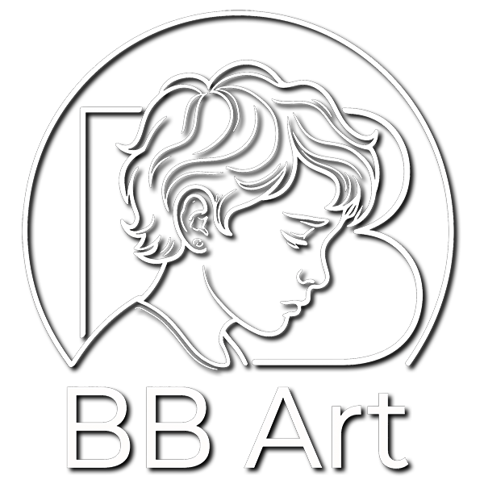

Breathing life into aesthetics. All my mirrors are here.
Hi, I am Bao!
About two years ago, I got completely and irreversibly hooked on neural networks. As a former pro-photographer, I physically cannot stand compromises in quality, so my main religion is absolute photorealism. It is funny to watch the evolution: just yesterday, AI proudly handed us plastic six-fingered mutants, and today even I, with my trained eye, periodically freeze, trying to distinguish a generation from a real shot. The line between the real and the generated is erasing right before our eyes, and, I do not know about you, but this process wildly drives me, perfectly matching my vision of art.
It all started with beautiful static images. But as soon as neural networks learned to produce decent quality in dynamics, I dived into "vivifications" - breathing life into my best art, then into the most worthy works of others, and then I started animating the best real photographs. Sometimes these are short video sketches for 5-15 seconds, and sometimes - serious cinematic works like "The Lighthouse of a Free Destiny" or "COSMOBOY", which you can find on my social networks or Telegram channel. A separate kind of meditation for me is the restoration and animation of retro classics killed by time.
But my main focus right now is the reality expansion project, Beyond by BB Art. The original shot for me is just a keyhole. We see only what the photographer managed to catch in the viewfinder. But what is there on the left? Where does the hero's gaze go? What will happen a second later? I take the essence of the original and build a whole alternative universe around it.
I never stop at what has been achieved, I always try to be at the forefront of the latest technologies, studying new neural networks and techniques that allow me to stitch fact and fiction so that the seam simply disappears. You no longer understand where reality ends and my directing begins. And that is damn impressive, isn't it? ))
I catch beauty in all its forms - from visuals to poetry and prose. But my ultimate dream remains big cinema. My goal is to shoot a feature film that will be impossible to distinguish from reality, and I am walking towards it step by step.
All this magic so far runs on pure enthusiasm, draining my time and very real resources. I sincerely ache for aesthetics, and your warm comments are the best band-aid for any bans. But if my visual world is especially close to you, you can always throw some fuel into my reactor via the donate button below (unfortunately, for now, this is only possible via cryptocurrency). Paying for numerous subscriptions to the most advanced AI services is sometimes a very expensive pleasure that I cannot always afford. Therefore, if you like what I do and would like me to continue and improve the quality of my work - you can write to me with a proposed donation amount. I will send you a link to pay for a subscription that I currently need (in this case, payment by card is possible).
P.S. Generally, I do not like asking for donations, but I am ready to work for them - I am open for private commissions. I am ready to push the boundaries of reality for any photograph dear to you and create a unique cinematic story out of it - following your script or mine. Write to me via the form below.